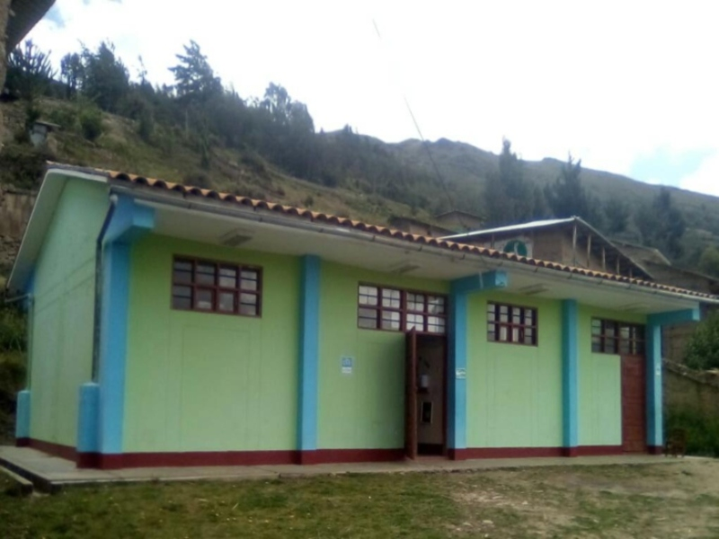

VERAMENDI GAMARRA REIDA
El Profesional Técnico en Desarrollo de Sistemas de Información, es capaz de desarrollar la construcción de programas, pruebas integrales, realizar la puesta en producción y administrar el diseño funcional de los sistemas de información o servicios de TI, de acuerdo al diseño funcional, estándares internacionales de TI, buenas prácticas de programación, políticas de seguridad de la organización, la planificación efectuada y las demandas del negocio que son parte del alcance de la arquitectura de sistemas vigente.
EXPERIENCIA
CEPRE_CESAR BALLEJO
Atencion al publico,gestionar agencia,gestinar documentos, vigilancia en la administracion, elaborar prsentaciones, organizar compania.
EDUCACIÒN
EDUCACIÒN PRIMARIA
RURA-PINRA-HUACAYBAMBA-HUANUCO
EDUCACIÒN SECUNDARIA
CAJAN-PINRA-HUACAYBAMBA-HUANUCO
EDUCACIÒN SUPERIOR
BARRANCA - BARRANCA
HABILIDADES

- Microsoft ExceL.
- Mantenimiento de equpos de computo.
- Redes sociales
- Microsoft ofice.
- Habilida en HTML.
- Actitud positiva.
- Habilidad de comunicaciòn.
- Habilidad de trabajar en equpo.
- Habilidad para motivar.
- Capacidad para trabajar en equipo.
- Mobile-First, Responsive Design
- Cross Browser Testing & Debugging
- Cross Functional Teams
- Agile Development & Scrum
Interests
Apart from being a web developer, I enjoy most of my time being outdoors. In the winter, I am an avid skiier and novice ice climber. During the warmer months here in Colorado, I enjoy mountain biking, free climbing, and kayaking.
When forced indoors, I follow a number of sci-fi and fantasy genre movies and television shows, I am an aspiring chef, and I spend a large amount of my free time exploring the latest technolgy advancements in the front-end web development world.
Awards & Certifications
- Google Analytics Certified Developer
- Mobile Web Specialist - Google Certification
- 1st Place - University of Colorado Boulder - Emerging Tech Competition 2009
- 1st Place - University of Colorado Boulder - Adobe Creative Jam 2008 (UI Design Category)
- 2nd Place - University of Colorado Boulder - Emerging Tech Competition 2008
- 1st Place - James Buchanan High School - Hackathon 2006
- 3rd Place - James Buchanan High School - Hackathon 2005